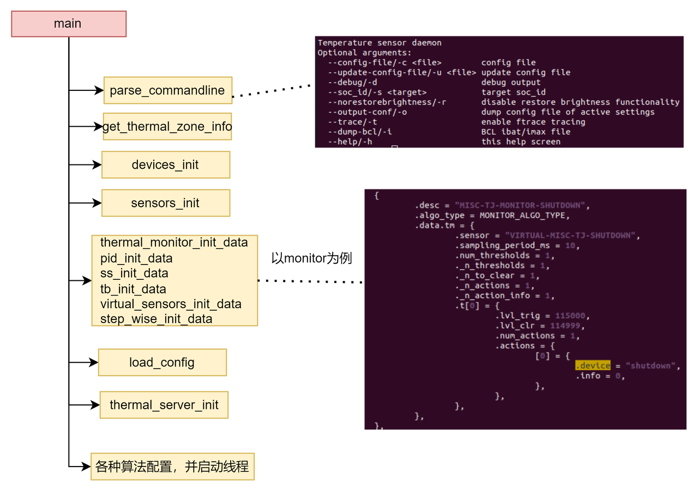

1. 前言
在当前移动处理芯片性能过剩的时代，用户对手机的温度要求越来越高，更加苛刻的标准，最好永不发热。在这种背景下，温控领域的工作变得日益重要，众多大厂都在不断魔改和优化他们的温控技术。今天我们也带大家看看温控技术的其中一部分：Thermal Engine。下面，我们将基于 GitHub 上的源代码，对 Thermal Engine 的工作原理进行深入剖析。
Thermal Engine是高通开发的用于温升控制的native层应用，它是一个守护进程，开机后将由init进程启动，最初在MSM8660 平台引入。Thermal Engine作为高通平台用户空间温控的处理中枢，会根据温度变化，按照预先设定的算法，来调整硬件的工作行为或强度级别，从而达到节能降温的目的。Thermal Engine也提供了对外交互的接口，用于与其它应用或服务进行通信，应用或服务可以通过socket向Thermal Engine注册温控发生时的回调处理，也可以通过socket动态修改温控配置。
2. 总体架构
为了更好的说明Thermal Engine的架构，我们先要了解下Thermal Engine在整个温控架构的位置。
整个温控架构可以划分为硬件层/kernel层/Native层/System层/App层，如图可见Thermal Engine主要是基于Linux kernel的thermal子系统而构建，它通过socket监听Thermal core上报的温度信息，并通过sysfs完成对温控设备的控温操作。同时其它服务或应用也可以通过socket来与Thermal Engine通信，这主要包含两种情况：一种情况是其它服务向Thermal Engine注册了温度触发回调；另一种情况则是其它服务通过socket对Thermal Engine进行动态配置，修改温控参数，如触发阈值/行为主体/行为主体限制值等。
下面我们具体看下Thermal Engine的主体架构：
源码文件位于：vendor/qcom/proprietary/thermal-Engine
Thermal Engine作为用户空间温控的核心，主要负责对对thermal sensors, thermal algorithms, thermal cooling devices的管理，这些thermal sensors和cooling devices一般来自于对thermal core相关sysfs文件节点的解析；同时thermal Engine也管理着一组温控算法，它根据输入的温度等级，来做出不同的控温操作；thermal Engine支持socket通信，thermal-Engine作为服务端，client可以通过向thermal-Engine注册不同的回调函数，当触发温控时，就可以通过这些回调通知client，或执行相应的回调操作。Thermal Engine的典型目标就是将芯片的目标温度限制在85度~95度以内的范围，金属壳温限制在40度左右，塑料壳温限制在40~45度左右
Thermal sensors：主要来源于内核thermal core创建的thermal zone文件节点，代表各路温度传感器。这些温度包含了SOC内部的Tj温度和位于PCB板的NTC温度，值得一提的是，Thermal Engine的传感器概念已经被泛化，除了监测温度，还监控功率、电流、电压和流量等这些类温度的指标。thermal sensor主要通过uevent接收来自内核thermal core的温度上报，唤醒sensor的线程，再由sensor线程唤醒关联的thermal algorithm线程
Thermal cooling devices：主要来源于内核thermal core创建的thermal cooling devices文件节点，可实现对各个cooling device的功率等级控制。
Thermal Algorithms：会将thermal sensors和thermal cooling devices联系起来，管理着触发温度/解除触发温度/主体行为/主体行为等级等。它是整个thermal Engine的核心，每个Thermal Algorithm都有一个线程，它被thermal sensor线程唤醒后，根据预设的触发/解除触发温度阈值，对关联的cooling devices进行功率等级控制。目前Algorithms包含了很多种：monitor, ss, pid, virtual sensor等
Thermal config：主要用于加载并解析温控配置文件，它会解析温控配置文件中的每一个section(参考温控配置示例一节)，根据section中设定的温控算法，下发给对应的Thermal algorithm
Thermal util netlink：主要用于监听内核thermal subsystem上报的uevent事件，这些事件往往是达到了温控的触发点
Thermal server：作为socket服务端主要用于接收Service/App发起的请求，这些请求包含对温控配置的查询和更新；client端可以预先向server端注册回调，发生温控时Thermal server会通知给注册的客户端，执行其注册的回调
Thermal client：是Thermal Engine对外封装的动态库，主要用于其它Services或App向Thermal server发起请求或接收数据
3. 高通温控算法介绍
ss算法
通过设定一个单个温度作为控温的目标，这个算法会通过动态的对特定的硬件进行降温来维持温度值，如对CPU降频。这个算法适合于PCB温度和SOC片内温度的调节
monitor算法
monitor算法会根据温度设定多个阈值，针对每个阈值设定特定的控温操作，适合于LCD, MODEM
pid算法
PID 算法基于反馈控制原理，通过不断地调整输出信号来使系统的实际温度尽可能接近目标温度。它由三个组成部分组成：
比例项（Proportional）：根据实际温度与目标温度之间的差异，产生一个与差异成比例的输出。比例项的作用是使系统快速响应温度变化，但可能会导致温度在目标值附近产生偏差。
积分项（Integral）：根据时间和温度差异的累积量，产生一个用于消除稳态误差的输出。积分项的作用是消除温度稳态下的偏差，使实际温度更接近目标温度。
微分项（Derivative）：根据温度变化速率的变化率，产生一个用于抑制温度变化速度的输出。微分项的作用是减小温度的震荡和过冲，提高系统的稳定性。
计算公式如下：
1 | Output = Kp * Error + Ki * Integral(Error) + Kd * Derivative(Error) |
其中，Kp、Ki 和 Kd 是控制参数，用于调节比例项、积分项和微分项的影响程度。Error 是实际温度与目标温度之间的差异
virtual算法
virtual算法就是对一组传感器的运用，这一组传感器被抽象为一个虚拟传感器，虚拟传感器主要用作两种功能使用：
一种功能是用作多传感器触发，就是检查这一组传感器中的每一个传感器是否达到触发阈值，根据设定的逻辑关系 “或” “与” 来决定是否触发温控；
另一种是用作算法传感器，支持多种算法，也就是对组内的每个传感器温度值，经过某算法处理（如加权拟合）得到一个处理后的温度值，以此温度值作为触发温控的温度
4. Thermal Engine 全景图
如上框图主要以monitor算法为例进行说明
从前面的介绍，我们了解到Thermal Engine主要分为3个部分，sensor部分主要对各种传感器的管理；cooling device部分主要是对降温设备的管理；algorithm部分主要是提供的各种算法的管理，典型算法：monitor、ss、pid等。Thermal Engine的温控策略主要来自于各个温控配置文件，以及内嵌的温控配置，这些配置以setting section作为一个温控配置单元。温控配置文件和内嵌配置中包含了多个setting section，这里主要以monitor算法为例，展开介绍Thermal Engine各个组件的功能。
如下是一个温控配置的setting section举例：
1 | [MONITOR-THERM-GOLD] |
- tm_instance_info
每个setting section都只会创建一个对应的实例，依据不同的算法，创建的实例也不同，如上示例中采用thermal monitor算法，会创建tm_instance_info实例，tm_instance_info代表一个thermal monitor算法的实例。tm_instance_info有两个比较关键的成员：ts_client和dev_client_list。首先来说ts_client，ts_client是一个struct sensor_client_type *指针，主要指明了这个tm_instance_info与哪个sensor关联，从图上可以看到每个tm_instance_info只有一个sensor关联，当然这个sensor可能是virture sensor（多个传感器通过权重拟合）。而这个ts_client也会加入到一个链表，因为对于每个sensor来说，有很多个算法实例会使用到它，这个链表就是方便记录本sensor被哪些实例所使用，ts_client会关联到这个sensor；
再看另一个成员dev_client_list，它是一个指针数组，主要与具体的cooling设备关联，也就是tm_instance_info会对哪些降温设备进行操作，每个device_clnt_handle就是一个device_clnt指针，与一个devices_manager_dev的device_clnt关联，而devices_manager_dev就是实现对降温设备管理的结构体，目前对每个tm_instance_info实例只支持最多16个设备进行控温
- settings_info
tm_instance_info实例的信息实际是通过settings_info来记录的,，settings_info中记录了具体的算法、触发sense、触发阈值、发生温控时对哪个设备进行温控操作、执行的操作值actions_info是多少，所有的settings_info组成一个全局链表thermal_setting_t
- sensors_mgr_sensor_info
sensors_mgr_sensor_info实现对sensor的管理，每个sensor对应一个sensors_mgr_sensor_info，它会链接到全局链表sensor_list
- devices_manager_dev
devices_manager_dev实现对cooling device的管理，每个cooling device对应一个devices_manager_dev，它会链接到全局链表dev_list, 每个cooling device也会分很多等级，用device_lvl_info来管理。devices_manager_dev在初始化时也会创建device_clnt，所有的device_clnt会链接为一个链表，tm_instance_info的dev_clnt_list数组引用的就是device_clnt链表中的成员。
5. 初始化流程

当thermal-Engine守护进程运行后，主要完成sensor初始化、cooling device初始化以及各种算法（以monitor为例）的初始化。
具体包含如下：
- parse_commandline：解析命令行参数
- get_thermal_zone_info：遍历获取所有的sensor信息，保存在全局thermal_zone_info数组中
- devices_init：对所有cooling devcie进行初始化
- sensors_init：对所有的sensor进行初始化
- 配置项分为内嵌配置section和配置文件，此处是解析各算法内嵌的配置section，解析所有的配置section保存在全局thermal_settings中
- load_config：解析配置文件的配置section，并保存到全局thermal_settings
- thermal_server_init：thermal_Engine需要接收thermal core上报的sensor信息，也接收其它app或服务的交互信息，此处进行socket相关设置
- 对各算法进行初始化，创建每个算法的实例，这个实例会将device和sensor联系起来。每个算法都对应一个线程，启动这个线程
下面会分别说明上述各个初始化的流程
5.1 devices_init
devices_init是对所有cooling devcie进行初始化，Thermal Engine全景图章节的cooling device部分就是通过devcies_init来构建出来的，核心工作包括：
为每个cooling device创建devices_manager_dev
初始化devices_manager_dev；
为每个devices_manager_dev创建一个client
具体将cooling device进行了如下类别的划分：
gpu设备初始化
主要通过gpufreq_init获取频率表，通过tmd_init_gpu_devs为每个gpu创建devices_manager_dev，并初始化后链入全局dev_list，同时也会为每个gpu会创建一个clientcpu设备初始化
tmd_init_cpu_devs初始化每个cpu的频率，并为每个cpu创建devices_manager_dev，初始化并炼入全局dev_list，为每个cpu会创建一个client；为每个cpuplug设备创建devices_manager_dev，初始化创建的devices_manager_dev，并炼入全局dev_list，为每个cpuplug device会创建一个clientQMI远程设备初始化
qmi_communication_init为每个远程client创建线程，用于与远程QMI服务通信，这些远程设备包含了modem、adsp、cdsp等通用设备初始化
通用设备是一些通用的降温设备，也可能是一些抽象的设备，不对应具体的硬件，高通给出的通用设备包含了：shutdown, none, report, report_rule, camera, camcorder, lcd等，init_generic_devs为每个通用设备创建devices_manager_dev，初始化创建的devices_manager_dev，并炼入全局dev_listThermal Engine的tmd设备
这里主要添加了除前述4种设备之外的cooling device，从打印上看主要包含了如下的cooling devcie.
这里需要注意的是，这些cooling device要排除thermal core中已经使用的cooling device，thermal Engine如果要使用thermal core已经使用的cooling device，需要为cooling device创建不同名的cooling device。1
2
3
4
5
6
7
8
9
10
11
12
13
14
15
16
17
18
19
20
21
22
23
24
25
26
27
28
29
30
31Added cooling device: battery with cdev id:41
Added cooling device: mmw2_dsc with cdev id:58
Added cooling device: sdr0_nr_dsc with cdev id:48
Added cooling device: ufs with cdev id:28
Added cooling device: mmw0_dsc with cdev id:56
Added cooling device: pause-cpu6 with cdev id:18
Added cooling device: sdr0_lte_dsc with cdev id:46
Added cooling device: pause-cpu3 with cdev id:6
Added cooling device: pa_nr_sdr0_scg_dsc with cdev id:54
Added cooling device: modem_bw_backoff with cdev id:62
Added cooling device: pa_nr_sdr0_dsc with cdev id:52
Added cooling device: modem_vdd with cdev id:42
Added cooling device: mmw_ific_dsc with cdev id:60
Added cooling device: pa_lte_sdr0_dsc with cdev id:50
Added cooling device: pause-cpu7 with cdev id:12
Added cooling device: wsa with cdev id:40
Added cooling device: mmw3_dsc with cdev id:59
Added cooling device: cpufreq-cpu0 with cdev id:0
Added cooling device: sdr1_nr_dsc with cdev id:49
Added cooling device: pause-cpu5 with cdev id:9
Added cooling device: thermal-cluster-3-7 with cdev id:29
Added cooling device: mmw1_dsc with cdev id:57
Added cooling device: sdr1_lte_dsc with cdev id:47
Added cooling device: panel0-backlight with cdev id:37
Added cooling device: pause-cpu2 with cdev id:7
Added cooling device: pa_nr_sdr1_scg_dsc with cdev id:55
Added cooling device: pause-cpu4 with cdev id:5
Added cooling device: pa_nr_sdr1_dsc with cdev id:53
Added cooling device: wlan with cdev id:61
Added cooling device: pause-cpu1 with cdev id:3
Added cooling device: pa_lte_sdr1_dsc with cdev id:51
5.2 sensors_init
sensors_init主要是对各个sensor传感器进行初始化，核心的工作就是：
为每个sensor创建一个sensors_mgr_sensor_info；
初始化sensors_mgr_sensor_info；
并为每个sense创建一个线程
主要包含了三类sensor:
modem的sense
首先会通过modem_ts_qmi_init初始化与modem的通信，包含了modem、adsp、cdsp、fusion等, 之后通过add_tgt_sensors_set(mdm_sensors)添加modem的sense，创建sensors_mgr_sensor_info来自thermal zone的sense
parse_thermal_zones解析底层thermal core注册的thermal zone，为每个thermal zone创建sensors_mgr_sensor_info。这里的thermal_nl_init，它执行通讯链路的初始化，这个通信链路就是用于与thermal core进行通信band width的sense
从代码看主要包含了camera_bw和显示带宽display_bw，创建完每个sensor的sensors_mgr_sensor_info后就会为每个sense创建一个线程，线程处理函数为sensor_monitor;
add_tgt_sensor为每个sensor创建sensors_mgr_sensor_info，并创建线程的函数如下：1
2
3
4
5
6
7
8
9
10
11
12
13
14
15
16
17static int add_tgt_sensor(struct sensor_info *sensor)
|-sensor_mgr = malloc(sizeof(struct sensors_mgr_sensor_info));
|-sensor_mgr->get_temperature = generic_read;
| sensor_mgr->shutdown = generic_shutdown;
|-if (sensor->interrupt_wait)
| sensor_mgr->wait = generic_wait;//sensor_monitor线程将在此wait上阻塞
| if (sensor->update_thresholds)
| sensor_mgr->update_thresholds = generic_update_thresholds;
| if (sensor->get_trip_temperature)
| sensor_mgr->get_trip_temperature = generic_trip_temp_read;
\-sensors_manager_add_sensor(sensor_mgr);
|-sensor_mgr->default_polling_interval = SENSOR_DEFAULT_POLLING_INTERVAL;
|-sensor_mgr->next_sensor = sensor_list;
| sensor_list = sensor_mgr;
| sensor_cnt++;
\-pthread_create(&(sensor_mgr->monitor_thread), NULL,
sensor_monitor, sensor_mgr);
5.3 thermal_monitor
初始化过程中会对各种算法进行初始化，此处主要以monitor算法为例。
thermal monitor初始化的主要工作就是设置tm_instance_info实例的setting信息，它包含了内嵌或配置文件中配置section的主要信息，核心工作包括：
通过devices_manager_get_list就可以获取到使用的cooling device信息；
通过sensors_setup用于为thermal_monitor设置sensor信息，并创建必要的sensor client;
最后则创建了 monitor算法的处理线程sensor_monitor
5.4 thermal_nl_init
前面在介绍sensors_init时，有一个thermal_nl_init函数，通过它建立起与thermal core的通信链路，会创建单独的线程thermal_sensor_netlink和thermal_sensor_netlink_sample来处理，其中thermal_sensor_netlink用于处理thermal core发送的trip事件，用于更新温度触发点；thermal_sensor_netlink_sample主要用于采样thermal core的温度，当thermal core产生温度更新事件就会上报，thermal_sensor_netlink_sample就会去查询。
1 | int thermal_nl_init(void) |
我们主要看下thermal_sensor_netlink_sample的实现
1 | static void *thermal_sensor_netlink_sample(void *data) |
thermal_nl_sample_cb回调函数如下
1 | static int thermal_nl_sample_cb(struct nl_msg *n, void *data) |
这里的temp_cb回调是thermal_sensor_temp_sample，当thermal core上报温度时就会执行thermal_sensor_temp_sample回调函数
1 | static void thermal_sensor_temp_sample(int tz_id, int temp, void *data) |
thermal_sensor_temp_sample获取到温度后将通过search_and_notify发出通知, 最终唤醒等待在thermal_sensor_condition上面的线程，这个线程就是sensor的sensor_monitor线程处理函数。
那么这里的temp_cb回调是在何时初始化的呢？总体流程就是：
1 | parse_thermal_zones |
thermal_sensor_init的函数在thermal_sensor_setup或tsens_sensors_setup都有调用, setup回调初始化如下：
1 | static void parse_thermal_zones(void) |
5.5 thermal_server_init
thermal_server_init主要创建了thermal socket，包括发送和接收socket，用于与用户空间的客户端进行socket通信，thermal_server_init创建了单独的线程，监听来自用户空间客户端的请求，并处理
1 | thermal_server_init(void) |
6. sensor传感器处理线程
注：有两个线程处理函数的名字都是sensor_monitor，其中一个是sensor线程的处理函数；另一个是monitor算法的线程处理函数，此处介绍的sensor端的线程处理函数
sensor_monitor线程平时在没有温度触发请求时是处于休眠态，一旦接收到底层thermal core上报的温度信息，就会从睡眠态唤醒，唤醒后的核心工作包括：
唤醒后它会获取温度
并会发出通知，通知等待此sensor的线程，而monitor算法线程就是其中一个
第一次休眠
sensor_monitor线程在没有激活的请求时，就会阻塞睡眠，此时sensor_mgr->req_active为0，因此可以看到打印：D ThermalEngine: sensor_monitor: skin-msm-therm Wait for client request
之后monitor算法在update_active_thresh更新有效阈值时会唤醒sensor_monitor线程；第二次休眠
第二个发生阻塞睡眠的点是sensor_wait，表示当前没有温度触发请求,打印：D ThermalEngine: sensor_monitor: skin-msm-therm Sensor wait
当底层kernel有发送uevent就会唤醒sensor线程继续执行
sensor_wait的实现如下：1
2
3
4
5
6
7
8
9
10
11
12
13
14static void sensor_wait(struct sensors_mgr_sensor_info *sensor_mgr)
{
if (sensor_mgr->wait)
sensor_mgr->wait(sensor_mgr);
else {
uint32_t polling_interval =
(sensor_mgr->active_thresh.polling_interval_valid)?
(sensor_mgr->active_thresh.polling_interval):
(sensor_mgr->default_polling_interval);
dbgmsg("%s: %s Wait start. %dms\n", __func__, sensor_mgr->name, polling_interval);
usleep(polling_interval*1000);
dbgmsg("%s: %s Wait done.\n", __func__, sensor_mgr->name);
}
}由前述知，在add_tgt_sensor时已经将sensor_mgr->wait初始化为generic_wait
1
2
3
4
5
6sensors.c
static void generic_wait(struct sensors_mgr_sensor_info *sensor_mgr)
{
struct sensor_info *sensor = (struct sensor_info *)sensor_mgr->data;
sensor->interrupt_wait(sensor);
}interrupt_wait初始化如下（以add_tgt_gen_sensors为例）：
1
2
3parse_thermal_zones
|-add_tgt_gen_sensors
|-sensor->interrupt_wait = thermal_sensor_interrupt_wait;thermal_sensor_interrupt_wait的实现如下：
1
2
3
4void thermal_sensor_interrupt_wait(struct sensor_info *sensor)
|-while (!sensor_data->threshold_reached) {
pthread_cond_wait(&(sensor_data->thermal_sensor_condition),
&(sensor_data->thermal_sensor_mutex));sensor_monitor线程等待在thermal_sensor_condition，以通用sensor为例，这个条件变量的唤醒，是通过底层kernel发送的uevent来唤醒，具体是由thermal_sensor_temp_sample来唤醒（见sensors_init一节），底层一旦触发event上报后，将由之前的中断方式改为轮询方式进行event上报；
获取温度信息，通知等待此sensor的所有client，通过调用client->request.notify_cb_func（thresh_event）来通知，以monitor算法为例，这个notify_cb_func回调在thermal_monitor算法初始化时设置为sensor_thresh_notify函数，它主要的实现就是发出唤醒信号，通知算法线程，对于monitor算法，唤醒的线程就是monitor算法的sensor_monitor线程，从这里我们可以看出，每个温控算法都会给它对应的sensor client rquest设定一个notify，当sensor线程被唤醒后就会通过这个notify去唤醒对应的算法线程，本例唤醒的就是thermal monitor算法的线程，后者会更新阈值，并重新置位sensor_mgr->req_active，之后sensor的线程会重新进入上述第二次休眠，循环往复。
7. monitor算法处理线程
注：有两个线程处理函数的名字都是sensor_monitor，其中一个是sensor线程的处理函数；另一个是monitor算法的线程处理函数，此处介绍的montior算法端的线程处理函数
sensor_monitor为monitor算法的处理程序，最初它处于阻塞态，当接收到thermal core的event事件，sensor线程会被唤醒，sensor线程进一步唤醒monitor线程，monitor线程唤醒后的核心工作包括：
monitor线程唤醒后会遍历所有的tm_instance_info实例，获取sensor温度，与tm_instance_info实例中的每个阈值进行比较，根据比较情况更新新的阈值；
唤醒等待的线程，这其中主要包含thermal server线程，用于通知client，发生了温控事件；
执行cooling操作；
处理完毕之后将再次进入睡眠态，等待sensor线程唤醒
8. Thermal server & client通信过程
Thermal client向Thermal Engine服务端注册回调，服务端监听客户端请求执行回调；除此之外，Thermal客户端还可以向Thermal服务端动态设置温控配置参数或查询温控配置参数。
8.1 客户端注册回调
thermal_client_register_callback用于客户端向服务端注册回调，服务端会记录客户端注册的回调，通过name可以查询到对应的回调，这样客户端发送请求时，服务端监听到就可以执行对应的回调，核心工作包括：
（1）向server端注册回调；
（2）创建客户端监听线程，监听服务端发送过来的信息
1 | thermal_client.c |
首先会检测客户端是否是合法的，目前它只支持在notify_clients数组中列出的客户端
1
2
3
4
5
6
7
8
9
10
11
12
13
14
15
16
17
18
19
20
21
22static struct notify_client notify_clients[] = {
{
.name = "camera",
.min_req_data = 0,
.max_req_data = MAX_CAMERA_MITIGATION_LEVEL,
},
{
.name = "camcorder",
.min_req_data = 0,
.max_req_data = MAX_CAMCORDER_MITIGATION_LEVEL,
},
{
.name = "spkr",
.min_req_data = -30,
.max_req_data = 150,
},
{
.name = CONFIG_QUERY_CLIENT,
.min_req_data = 0,
.max_req_data = LEVEL_MAX,
}
};通过add_to_list将客户端名字和回调记录到server端的list_head全局链表
- 如果是第一个注册的客户端，则会创建单独的线程thermal_client_recv_thread与服务端进行交互
8.2 服务端监听并执行回调
服务端创建专门的线程来监听客户端的注册回调请求，注册了回调的客户端通过向sockfd_server_send socket发送请求将自己加入到thermal_send_fds数组，这样当回调发生后就可以通知到客户端；通过sockfd_server_recv来接收客户端请求，服务端会根据请求执行查询配置或更新配置的回调操作。
1 | thermal_server.c |
- thermal_server_init创建了单独的线程，监听来自用户空间客户端的请求，并处理，线程处理函数为do_listen_client_fd，它主要通过select监听的文件描述符集变化，包括：sockfd_server_send，sockfd_server_recv，sockfd_server_recv_passive，sockfd_server_log，sockfd_server_rule。
- sockfd_server_send主要用于监听客户端消息，将接收的fd加入到thermal_send_fds监听列表
连接到thermal server服务端的客户端可以提前向服务端注册回调，所有客户端的回调通过list_head链表链接
- sockfd_server_recv是用来监听客户端的查询温控配置或更新温控配置的请求信息，并执行客户端对应的回调，即返回查询配置结果给客户端或更新温控配置
9. 动态配置参数
Thermal Engine对外提供了如下的接口用于不同的Servcie/App与之交互：
如下的接口用于不同的Servcie/App动态查询、清空或更新温控配置参数：
1
2
3
4
5
6//允许外部获取温控配置参数
int thermal_client_config_query(char *algo_type, struct config_instance **configs);
//允许外部清除温控配置参数
void thermal_client_config_cleanup(struct config_instance *configs, unsigned int config_size);
//允许外部更新设置温控配置参数
int thermal_client_config_set(struct config_instance *configs, unsigned int config_size);如下的接口用于不同的Servcie/App向Thermal Engine注册回调、发送请求：
1
2
3
4
5
int thermal_client_register_callback(char *client_name, int (*callback)(int , void *, void *), void *data);
int thermal_client_register_report_callback(int (*callback)(char *, void *, void*), void *data);
int thermal_client_request(char *client_name, int req_data);
void thermal_client_unregister_callback(int client_cb_handle);如下的接口用于向Thermal Engine发送带宽请求：
1
2
3/* APIs for bandwidth clients to send/clear bandwidth perf levels to thermal-Engine */
int thermal_bandwidth_client_request(char *client_name, int req_data);
void thermal_bandwidth_client_cancel_request(char *client_name);
10. 温控配置示例
Thermal Engine温控的主要思想是监测传感器触发温度，并采用预先设定的算法完成对相应设备的控温操作，这被称之为一条规则，每一条规则是通过一个配置来体现的，我们称之为一个section，如下是一个温控section的格式说明：
注：关于温控配置的说明可参考thermal-Engine目录下的readme.txt文件
1 | [<Algorithm instance label>] |
如下是一个具体的温控配置section举例：
1 | [MONITOR-THERM-GOLD] |
温控section的名字：MONITOR-THERM-GOLD，这个温控section的名字必须全局唯一
温控算法：为monitor算法
采样时间：500ms
温控传感器：触发温控的传感器名字为skin-msm-therm
温控阈值：当达到43.5度时会触发温控操作，可支持多个温控阈值
取消温控的阈值：当达到43度时会取消温控操作，可支持多个阈值
温控发生时的行为主体：当温控发生时将对cpu0,cpu3,cpu7执行限频
温控发生时的行为主体温控值：当温控发生时将对cpu0,cpu3,cpu7执行限频分别为1555200，1920000，1132800
Thermal Engine对传感器进行扩展，实现了虚拟传感器，可以将多个传感器按照一定的权重进行拟合，如下是一个示例：
1 | [virtual-sensor-0] |
通过对skin-msm-therm和xo-therm传感器按照一定的权重进行累加，得到虚拟传感器的温度值，此处虚拟传感器温度的计算公式为：(skin-msm-therm温度值 40 + xo-therm温度值 60) / (40 + 60)。
注：在将虚拟传感器作为触发条件时，与普通传感器没有区别。
11. thermal-Engine调试方法
启动和停止thermal-Engine
stop thermal-Engine和start thermal-Engine打印当前温控配置
thermal-Engine-v2 -o可打印当前的温控配置开启thermal Engine打印信息
thermal-Engine-v2 —debug可开启调试信息查看logcat中的温控打印信息
Logcat |grep ThermalEngine，查看thermal Engine的打印信息如何判断何时发生了温控？何时温控取消？
1
2
3
4
5
6
7
8
9
10
11
12
13
14
15
16
17
18如下打印表示发生了温控
130| # logcat | grep ThermalEngine | grep "raised"
07-14 16:27:06.132 6346 6564 I ThermalEngine: TM Id 'MONITOR-THERM-GOLD' Sensor 'skin-msm-therm' - alarm raised 7 at 50.0 degC
07-14 16:27:06.133 6346 6564 I ThermalEngine: TM Id 'MONITOR-THERM-GOLD' Sensor 'skin-msm-therm' - alarm raised 6 at 50.0 degC
07-14 16:27:06.133 6346 6564 I ThermalEngine: TM Id 'MONITOR-THERM-GOLD' Sensor 'skin-msm-therm' - alarm raised 5 at 50.0 degC
07-14 16:27:06.133 6346 6564 I ThermalEngine: TM Id 'MONITOR-THERM-GOLD' Sensor 'skin-msm-therm' - alarm raised 4 at 50.0 degC
07-14 16:27:06.133 6346 6564 I ThermalEngine: TM Id 'MONITOR-THERM-GOLD' Sensor 'skin-msm-therm' - alarm raised 3 at 50.0 degC
07-14 16:27:06.133 6346 6564 I ThermalEngine: TM Id 'MONITOR-THERM-GOLD' Sensor 'skin-msm-therm' - alarm raised 2 at 50.0 degC
07-14 16:27:06.133 6346 6564 I ThermalEngine: TM Id 'MONITOR-THERM-GOLD' Sensor 'skin-msm-therm' - alarm raised 1 at 50.0 degC
如下打印表示温控触发取消
130| # logcat | grep ThermalEngine | grep "clear"
07-14 16:27:30.636 6346 6564 I ThermalEngine: TM Id 'MONITOR-THERM-GOLD' Sensor 'skin-msm-therm' - alarm cleared 7 at 30.0 degC
07-14 16:27:30.636 6346 6564 I ThermalEngine: TM Id 'MONITOR-THERM-GOLD' Sensor 'skin-msm-therm' - alarm cleared 6 at 30.0 degC
07-14 16:27:30.636 6346 6564 I ThermalEngine: TM Id 'MONITOR-THERM-GOLD' Sensor 'skin-msm-therm' - alarm cleared 5 at 30.0 degC
07-14 16:27:30.636 6346 6564 I ThermalEngine: TM Id 'MONITOR-THERM-GOLD' Sensor 'skin-msm-therm' - alarm cleared 4 at 30.0 degC
07-14 16:27:30.636 6346 6564 I ThermalEngine: TM Id 'MONITOR-THERM-GOLD' Sensor 'skin-msm-therm' - alarm cleared 3 at 30.0 degC
07-14 16:27:30.636 6346 6564 I ThermalEngine: TM Id 'MONITOR-THERM-GOLD' Sensor 'skin-msm-therm' - alarm cleared 2 at 30.0 degC
07-14 16:27:30.636 6346 6564 I ThermalEngine: TM Id 'MONITOR-THERM-GOLD' Sensor 'skin-msm-therm' - alarm cleared 1 at 30.0 degC
This is copyright.